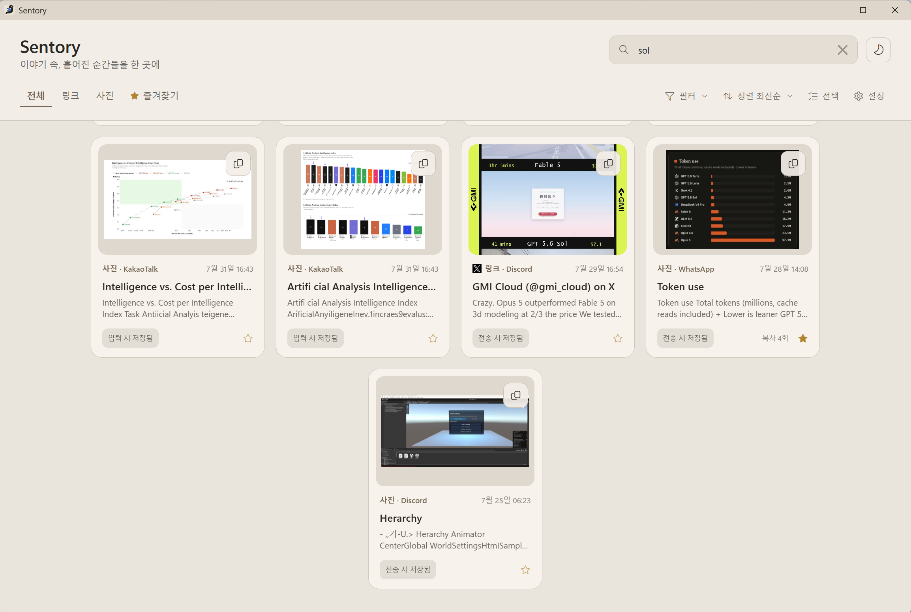
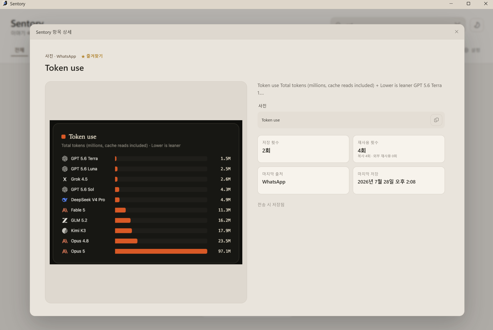
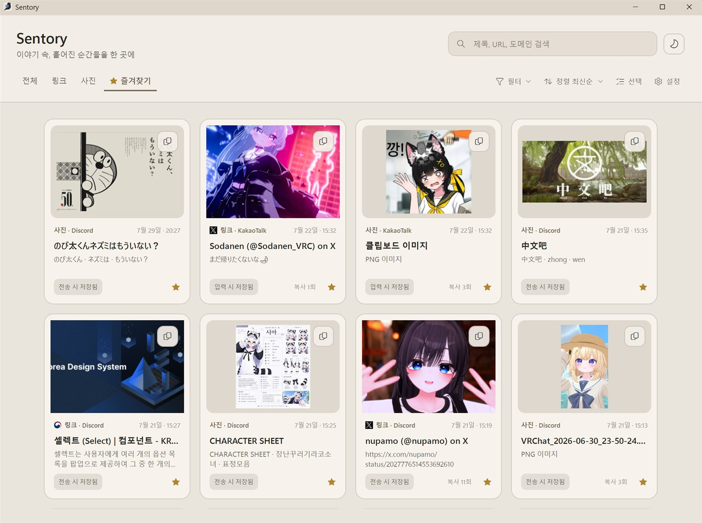

사진 속 글자까지 검색
다국어 OCR이 사진에 자동으로 이름을 붙여 이미지 내용도 검색할 수 있습니다.


Discord, Slack, 카카오톡 등에서 붙여넣거나 보낸 링크와 사진을 모아 검색하고 다시 꺼내 쓰세요.

지원 메신저
앱 지원 언어
대화방을 거슬러 올라가는 대신 제목, URL, 도메인과 사진 속 글자로 보관함을 검색하세요.
Discord, Slack 등 지원 메신저에서 전송한 항목만 자동으로 정리합니다.
다국어 OCR이 사진에 자동으로 이름을 붙여 이미지 내용도 검색할 수 있습니다.


Sentory는 별도 운영 서버 없이 동작하며, 보관 데이터는 사용자의 Windows PC에 남습니다.
여러 링크와 사진을 묶음 카드로 보관하고 한꺼번에 다시 복사할 수 있습니다.
OneDrive, Google Drive, Dropbox, MEGA, 로컬 폴더와 NAS WebDAV를 사용할 수 있습니다.
Windows 10·11의 x64와 ARM64 PC를 지원합니다. 설치 파일과 포터블 버전은 GitHub Releases에서 받을 수 있습니다.
GitHub 최신 릴리즈아닙니다. 지원 메신저의 채팅 입력 영역을 확인한 뒤 정해진 조건에 맞는 링크와 사진만 저장합니다.
Discord, Slack, WhatsApp, Telegram, LINE, WeChat은 실제 전송 뒤 저장합니다. 카카오톡은 채팅창에 붙여넣거나 탐색기에서 드롭한 시점에 저장합니다.
기본 보관함은 %LOCALAPPDATA%\Sentory에 저장되며, Sentory는 별도 운영 서버 없이 동작합니다.
직접 고른 클라우드 폴더나 NAS WebDAV를 연결하면 Windows 컴퓨터 사이에서 사진, 링크와 사용 상태를 맞출 수 있습니다.
현재 정식 배포는 Windows 10과 11의 x64, ARM64만 지원합니다. macOS와 Linux 배포 일정은 아직 정해지지 않았습니다.